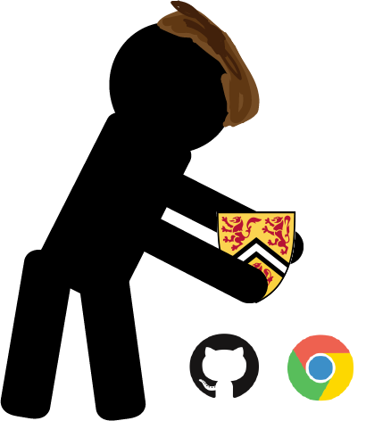

Click on the figures and explore! If the figure is surrounded by green, then you have already seen that one. |
Open Source I am a firm believer in having the majority of your work transparently online, or in the coding world "open-source", meaning others can see and modify your code. Following the lead of successful open-source companies such as Cloudera, Hortonworks and Alfresco, I would structure my business model like so:
|
Manage a Project To become a successful entrepreneur, one must have experience with creating an idea, managing a budget, recruiting members and then deploying the project. As the head of Horizons Robotics(a program which gives kids an opportunity that they normally would not be able to have at their school: building and coding a robot), I feel that I fill every category. I, as the head of the program researched which bots to buy with our limited budget, deciding on the MBots, which are arduino-based and inexpensive. The MBots also can be programmed with drag-and-drop, which was very useful due to our age group. I then gathered a group of responsible people together, and taught the curriculum which I created from scratch, which can be found here. During the time in which I waited for the bots to arrive I borrowed a Makey-Makey set from a teacher who taught younger grades. With these we made a controller and played Asteroids on the computer with it, by just touching the plasticine pads, which was a huge success and got the kids excited for the program. After this, we taught the kids to build and program the MBots in the subsequent sessions. During the last session, we had a "dance party", where we programmed the MBots to repeat autonomous code in which they moved around and flashed LED lights. The organizers of Horizons were so pleased with my performance that they offered me a paid position in their summer program and I will be working there through the month of July. Another major way in which I have demonstrated is through GII. As the head of the GII team at UCC, I played the key leadership role of organizing and leading the efforts to address the challenging problem of increasing birth registration in rural Indonesia. During this, I was able to bring the best possible solution out of our team by incorporating the finest ideas from each of our team members purely based off of the merit of the idea, which was decided by debate and discussion. It is through these experiences and more that I feel confident in leading a team to their full potential, and to achieving our goals.', this)"> |
| Confront Obstacles Working around, dealing with and persevering through obstacles are essential traits for an entrepreneur. The satisfaction I get after solving a bug in a program or thinking of a different approach to an important dilemma is second to none. I as a person am not averse to working with challenge, for through extreme perseverance I will either solve the problem or find a way to circumvent the problem while also improving the end result.', this)"> |
Able to Learn Through Own Volition In the summer of 2014 I built my first computer, a field totally unknown to me. It was so fun that I decided to go and build more computers, now building them for classmates. I still build computers for people who attend my school now, and will be building my next one after I am done exams. Through building these computers I was able to learn much about computer architecture and the value of perseverance through this. When I joined the robotics club, I was fascinated but also highly confused about the process of building a robot to compete in a competition. Through perseverance and a self-directed determination to educate myself I was able to learn the technique of designing, constructing and coding a robot. Now, as a club head of the robotics team at UCC I can safely say that I have made progress in understanding this ever-complicated art. As more of a back-end developer I, before this project had a very limited understanding of HTML, CSS and web hosting compared to my knowledge of Javascript, Java, Python and PHP. I took the plunge like I always do into a new field After some research I decided to use Github to host my site, which is the first site I have published to the web. Through this process I have learned much about the front-end design of a site. Such is the case with every project I embark on: I enter a daunting new field, and to make sense of it and have motivation to learn about it, I create an idea of something to do and then implement this idea, eventually grasping the essence of the field in my own way through self-directed learning. ', this)"> |
 |
| Well-Developed Interpersonal Skills & Friendships The morale level of any team is often not given enough credit as to how much of a large impact it has on it’s success. During my time playing in the all of the available school bands from 2011-present, it was always the band that bonded the most and had the most fun practices that did the best. As someone new to the Senior Jazz band in 2015, I was absolutely shocked at the level of camaraderie that all of the members had together. I thought to myself: "wow, this is why they get all of the medals and invitations". With this experience in contrast to the other bands I had been in, I knew then that morale level was a huge part of succeeding with a team. ', this)"> |
Knows What Success Means to Them According to Merriam-Webster, success is "the correct or desired result of an attempt". Success to me is, in my mind quite distinct from achieving the goals you set out to do. When Sir Alexander Fleming was working in his laboratory, he did not mean to revolutionize all medicine by discovering the first antibiotic in the world. Yet he did through serendipity, with the discovery of penicillin. All would agree that this is also a form of "success", demonstrating that success is not always achieving what you desired to do.', this)"> |
 |